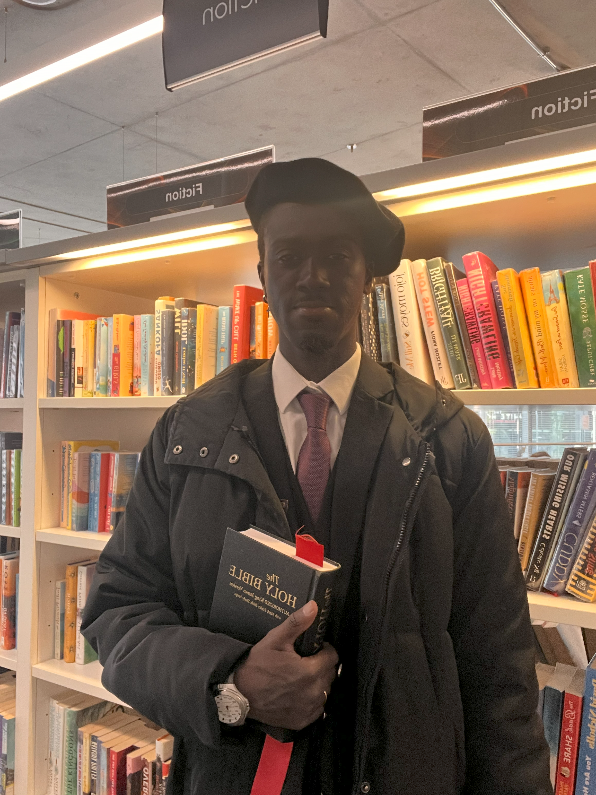

Since 2001, Chancellor Nature YN has led Physis Pistidos University with vision, resolve, and a deep commitment to intellectual and spiritual integrity. Known for a calm presence and uncompromising focus, Chancellor Nature has guided the university through transformative decades — growing its academic breadth while nurturing a uniquely reflective, student-centered community.
Chancellor Nature YN leads with a clear conviction: that education is not just about acquiring knowledge, but becoming the kind of person who knows how to use it wisely. His approach to leadership centers on clarity, honesty, and long-term growth — encouraging both students and staff to approach their work with integrity and intention.
Under his guidance, Physis Pistidos University has cultivated a culture of depth over speed, reflection over reaction, and substance over spectacle. Chancellor Nature values deliberate thought, personal accountability, and the building of strong, trust-based communities within and beyond the university.
Over the course of more than two decades, Chancellor Nature YN has shaped Physis Pistidos University into a distinctive academic and cultural institution. Under his leadership, the university has expanded its academic offerings, refined its admissions approach, and placed renewed emphasis on the quality of mentorship between faculty and students.
He has overseen the development of several interdisciplinary programs, encouraged a slower, more intentional pace of learning, and emphasized a balance between intellectual challenge and emotional clarity. Perhaps most importantly, Chancellor Nature has cultivated an environment where thoughtfulness is rewarded, and where community is built not around perfection, but around trust.
To the students of Physis Pistidos: this university exists for your growth — not just in knowledge, but in wisdom, strength, and sincerity. Take your time here seriously, but not rigidly. Question what needs questioning. Learn to listen deeply, speak truthfully, and act with intention.
You are not here to perform perfection. You are here to become who you are — with courage, with care, and with purpose. My role is to protect the space where that transformation can happen. Yours is to enter it fully.